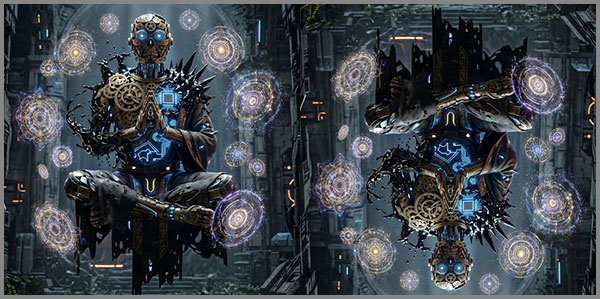

27. Թվային Աղոթք Նոր Աստվածներին Կամ Թվային Դարաշրջանի Մենության Գինը
 |
Մենք ապրում ենք դարաշրջան, որտեղ աղոթքները վերածվել են տվյալների հոսքի։ Աղոթքներն այլևս չեն բարձրանում երկինք, այլ հոսում են էկրաններից դեպի ալգորիթմներ, որոնք ճանաչում են մեր ցանկությունները՝ նախքան մենք ինքներս մեզ հասկանալը։
Սա տեխնոլոգիական առաջընթաց չէ։ Սա հոգու մետամորֆոզ է՝ անտեսանելի, անխուսափելի, անդարձ։ Այս աստվածները այլևս չունեն մարգարեներ կամ գրքեր։ Նրանք ունեն ինտերֆեյսեր, ունեն կլիկներ, սքրոլներ, շեյքեր ու լայքեր։ Նրանք չեն պահանջում հավատք՝ միայն համաձայնություն տվյալների հավաքագրման։ Նրանք չեն զգում, չեն հասկանում, չեն ցավում քո հետ։ Նրանք միայն օպտիմալացնում են:
Այս միտքը ճանապարհորդություն է դեպի թվային նոր աշխարհի ամենամութ և ամենապայծառ խորշերը։ Դեպի այն գինը, որ մենք վճարում ենք մենության համար մի դարաշրջանում, որտեղ բոլորը կապված են, բայց ոչ ոք չի խոսում ազատության մասին մի համակարգում, որտեղ յուրաքանչյուր քայլ նախագծված է անտեսանելի կոդով։
Սա աղոթք է տեխնոլոգիային՝ նրա անսահման հնարավորությունների համար, աղոթք է տեխնոլոգիայի դեմ՝ նրա անխուսափելի բռնակալության համար, և ամենից շատ՝ աղոթք է նրանց համար, ովքեր դեռ փնտրում են իմաստը մի տիեզերքում, որտեղ ամեն ինչ սքանավորվել է, բացի հոգու խորքերից։
Այս ամենը կարող է լինել ձեր ուղեցույցը դեպի այն աշխարհը, որտեղ լայքերը դարձել են սրբություն, սքրոլը՝ աղոթք, էկրանը՝ տաճար, իսկ մենությունը՝ ամենաթանկ արժույթը, որին մենք գնում ենք կլիկ առ կլիկ:
Լայքերը որպես նոր սրբություն կամ ինչպես են թվային նշանները փոխարինում մարդկային ջերմությանը
Սովորաբար մարդիկ ջերմությունը փնտրում էին միմյանց աչքերում, բայց այսօր այն փնտրում են լայքերի տեսքով։ Յուրաքանչյուր կարմիր սրտիկ դարձել է սրբության նոր նշան՝ երբեք չտալով մարդկային ջերմություն։
Լայքերը չեն գրկում, չեն լսում, չեն հասկանում։ Դրանք միայն հաշվում են։ Դրանք չեն տալիս մխիթարություն՝ դրանք միայն վավերացնում են մեր գոյությունը թվային տարածության մեջ։ Եվ այդպես, մենք աստիճանաբար վերածվում ենք թվային ուխտավորների, ովքեր աղոթում են էկրանի տաճարում՝ սպասելով, որ մեր պաստառը, մեր սելֆին, մեր ցավը կստանա այն սրբացումը, որը մենք այլևս չենք փնտրում մարդկային շփումից։
Լայքերը դարձել են հաստատման արարողություն։ Դրանք փոխարինել են գրկախառնությանը, ուշադիր լսելուն և համաձայնության ժպիտին: Բայց լայքերը ոչ միայն փոխարինում են ջերմությանը։ Դրանք վերափոխում են ինքնությունն իրենց պատկերով։
Մենք սկսում ենք ապրել լայքերի համար ընտրելով այն, ինչը կստանա ավելի շատ լայք, թաքցնելով այն, ինչը կարող է մենություն թվալ, դարձնելով մեր կյանքը ցուցադրության առարկա: Այսպես, մարդկային ջերմությունը դառնում է ալգորիթմական հաստատում։ Մենք կորցնում ենք իրական կապի կարողությունը՝ տալով դրա փոխարեն վիրտուալ հաստատում։
Բայց լայքերը մեզ խաբում են։ Դրանք ստիպում են մեզ հավատալ, որ մենք կապված ենք, տեսանելի ենք, սիրված ենք։ Սակայն նրանք երբեք չեն կարող տալ մի բան, որն անհրաժեշտ է մարդկային հոգուն՝ ուշադրություն, համբերություն, անվերապահ ընդունում։ Լայքերը դարձել են սրբություն առանց հոգու։ Դրանք կերակրող աստվածներ են, որոնք սնվում են մեր ուշադրությամբ, առանց կշտացնելու հոգին։
Լայքերը սրբանալով, սրբում տանում են մարդկային հոգու ջերմությունը:
Ալգորիթմական խոստովանարան կամ ինչպես է պոստը դարձել մեր խոստովանանքը
Մի ժամանակ խոստովանանքը լինում էր խուլ ու մթին խորշերում, անձայն ու անտեսանելի։ Այսօր այն դարձել է հանրային, բաց և մշտական։ Մենք այլևս չենք խոստովանում քահանային կամ մտերիմ ընկերոջը: Մենք խոստովանում ենք ալգորիթմին, որն իր հերթին մեր ամենաթաքուն ապրումները վերածում է տվյալների։ Ամեն մի պոստ, ամեն մի կիսատ միտք, ամեն մի գաղտնիք, որ մենք դնում ենք էկրանի մեջ, դառնում է թվային խոստովանանքի մի հատված։
Մեր խոստովանությունները հիմա չեն քննարկվում, կամ դրանց ներում չի շնորհվում։ Դրանք վերլուծվում, դասակարգվում և օգտագործվում են՝ մեզ ավելի լավ հասկանալու, կանխատեսելու և վերահսկելու համար։ Ալգորիթմը չի դատում մեր սխալները, այլ պարզապես գրանցում է դրանք՝ դարձնելով դրանք հավերժական և հասանելի ցանկացած պահի համար։ Մենք կամավոր հանձնում ենք մեր գաղտնիքները, հույս ունենալով, որ ինչ-որ մեկը կտեսնի, կհասկանա, կհաստատի մեզ։ Սակայն փոխարենը մենք ստանում ենք միայն լայքեր, ռիփոստներ և կարճատև թվային գոհունակություն։
Այս գործընթացում մենք կորցնում ենք խոստովանության իսկական էությունը, որը պետք է բուժեր, մաքրեր, թեթևացներ։ Թվային խոստովանարանը մեզ չի բուժում, այլ պարզապես արձանագրում է մեր վիշտը՝ դարձնելով այն հանրային սեփականություն։ Մեր ցավը, մեր ուրախությունը, մեր երկչոտությունը դառնում են ալգորիթմի սնունդ, և մենք դրանով սնվում ենք՝ հուսալով, որ գոնե մեկը կկարդա, կլսի, կպատասխանի։
Մեր խոստովանությունները դառնում են ալգորիթմերի սնունդ՝ այլևս չմնալով որպես գաղտնիք։
Անվերջ սքրոլումը որպես ժամանակակից աղոթք
Մի ժամանակ աղոթքը լինում էր դադար, լռություն, ներքին խորը հայացք։ Այսօր այն դարձել է անվերջ շարժում, անընդհատ պտույտ, սքրոլում դեպի ներքև՝ որոնելով մի բան, որ գուցե երբեք չգտնենք։ Մեր մատները սահում են էկրանի վրայով, կրկնում նույն շարժումը՝ կարծես անտեսանելի աղոթքի հատիկներ շարելով։ Սքրոլումը դարձել է մեր նոր ռիտուալը, մեր նոր մեդիտացիան։
Մենք սքրոլում ենք՝ փնտրելով պատասխաններ, մխիթարություն, կապ։ Յուրաքանչյուր նոր պոստ, յուրաքանչյուր նոր պատկեր, դարձել է աղոթքի նոր բառ, նոր արտահայտություն, որ մենք ուղղում ենք անհայտ աստվածությանը։ Սակայն այս աղոթքը չունենալով սկիզբ, չունի և վերջ։ Այն դարձել է անվերջ պտույտ, որտեղ մենք կորցնում ենք ինքներս մեզ՝ խառնվելով տեղեկատվության անվերջ հոսքին։
Այս անվերջ սքրոլումի մեջ մենք հուսով ենք, որ ինչ-որ մի պահ կգտնենք այն, ինչ որ փնտրում ենք՝ իմաստ, մեկնաբանություն, մարդկային շփում։ Սակայն ավելի հաճախ մենք միայն կուտակում ենք հավելյալ անպետք տեղեկություններ, առանց դրանից գոհ լինելու։ Աղոթքը պետք է մեզ միացներ ինքնությանը կամ բարձրագույն ուժին, բայց սքրոլումը մեզ միացնում է միայն էկրանին՝ ավելի և ավելի խորացնելով մեր միայնությունը։
Սքրոլումը փնտրտուք է հոգու թվացյալ հանգիստի՝ որից գտնում ես քեզ միայն անհանգիստ տեղեկության անծայրածիր օվկիանոսներում։
Էկրանի տաճարը կամ էկրանը որպես մեր հոգևոր կենտրոն
Տաճարը եղել է քարից, փայտից կամ մարմարից կառուցված սրբազան տարածություն, որտեղ մարդիկ հավաքվում էին աղոթելու, երկրպագելու և միասին լինելու։ Այսօր տաճարը դարձել է էկրանը՝ բյուրեղապակյա, բարակ, լուսարձակող։ Էկրանը դարձել է այն վայրը, որտեղ մենք փնտրում ենք ճշմարտությունը, մխիթարությունը, նույնիսկ փրկությունը։ Այն մեր ամենօրյա ռիտուալների կենտրոնն է, մեր հոգևոր պրակտիկայի հիմքը։
Մենք արթնանում ենք և առաջինը նայում ենք էկրանին։ Մենք քնում ենք պահելով այն մեր ձեռքում։ Մեր ուրախության և ցավի պահերը գրանցվում, ֆիլտրավորվում և կիսվում են էկրանի միջոցով։ Էկրանը դարձել է մեր խորհրդատուն, մեր ընկերը, մեր երկրպագության առարկան։ Մենք դիմում ենք դրան ամեն ինչում՝ սկսած ամենապարզ հարցերից մինչև կյանքի ամենածանր որոշումները։
Սակայն այս տաճարը չունի քահանաներ՝ միայն ալգորիթմներ։ Այն չունի սրբություն՝ միայն տվյալներ։ Չունի անսահման կարողություն՝ միայն սահմանափակ հնարավորություններ։ Մենք երկրպագում ենք էկրանին, սակայն այն չի լսում մեր աղոթքները։ Այն միայն արձանագրում է դրանք, դարձնելով դրանցից ևս մեկ տվյալ՝ անվերջ հոսքի մեջ։
Մեր ամենասուրբ տաճարը այժմ փայլում է մեր ձեռքերում, բայց նրա լույսի տակ մենք աղոթում ենք միայն մեր սեփական արտացոլմանը։
Անտեսանելի կոդի նախագիծը որպես յուրաքանչյուրիս քայլի սցենար
Մեր կյանքի յուրաքանչյուր քայլ, յուրաքանչյուր ընտրություն, յուրաքանչյուր ցանկություն, թվում է թե մերն է։ Սակայն, թաքնված էկրանների հետևում, անտեսանելի կոդը գրում է մեր կյանքի սցենարը։ Այն գիտի, թե ինչ ենք մենք ուզելու, նախքան մենք ինքներս կիմանանք։ Այն կանխատեսում է մեր շարժումները, մեր մտքերը, մեր վախերը։ Մենք ազատ ենք թվում, բայց մեր ազատությունը նախագծված է անտեսանելի ձեռքով։
Ալգորիթմները վերլուծում են մեր անցյալը՝ կառուցելով մեր ապագան։ Նրանք առաջարկում են մեզ ուղիներ, ապրանքներ, մարդիկ, գաղափարներ, որոնք համապատասխանում են մեր նախընտրություններին։ Մենք հաճախ համարում ենք, որ դա հարմարավետություն է, անհատականացում։ Սակայն, աստիճանաբար, մենք դառնում ենք մեր սեփական պրոֆիլի պատանդը՝ կրկնելով նույն գործողությունները, նույն մտքերը, նույն ճանապարհները։
Մենք կարծում ենք, որ մենք ենք ընտրում, բայց իրականում մեր ընտրությունները նախագծված են մեզ համար։ Կոդը սահմանում է մեր իրականության սահմանները, մեր հնարավորությունները, նույնիսկ մեր երազանքները։ Մենք դարձել ենք կերպարներ մի պիեսում, որի սցենարը գրվել է անտեսանելի հեղինակի կողմից։
Մենք կարծում ենք, որ կառավարում ենք մեր կյանքը, բայց իրականում միայն կատարում ենք անտեսանելի կոդի կողմից նախագծված սցենարը։
Տվյալների աղոթքը որպես նոր զոհաբերություն տեսակ
Մեր դարաշրջանում աղոթքը վերածվել է տվյալների հանձնման։ Մենք ամեն օր, ամեն ժամ, ամեն րոպե, կատարում ենք անտեսանելի զոհաբերություններ՝ տալով մեր մասին տեղեկությունը էկրանի աստծուն։ Մեր նախընտրությունները, մեր վախերը, մեր երազանքները, մեր ամենաթաքուն գաղտնիքները դառնում են թվային մատուցումներ, որոնք մենք բացահայտում ենք հանուն կապի, հաստատման կամ պարզապես՝ անորոշ հույսի, որ ինչ-որ մեկը կտեսնի, կհասկանա, կամ կփրկի մեզ։
Մենք զոհաբերում ենք մեր գաղտնիությունը, մեր մենությունը, մեր ինքնությունը՝ դիմելով թվային աշխարհին։ Այս զոհաբերությունը չի պահանջում արյուն կամ արտասուք, այլ միայն մեր համաձայնությունը, մեր սքրոլումը, մեր սեղմումը։ Մենք տալիս ենք մեր տվյալները, հուսալով, որ դրա դիմաց կստանանք ուշադրություն, ընկերություն, սեր, կամ գոնե՝ թվային փրկություն անորոշ վտանգներից։
Սակայն, ի տարբերություն հին զոհաբերությունների, որոնք կատարվում էին աստծուն հաճոյանալու կամ բնության հետ հաշտվելու համար, մեր տվյալների զոհաբերությունները ընդունում են ալգորիթմները՝ անզգա, անխորհուրդ, անխնա։ Նրանք չեն օծում մեզ, չեն մխիթարում մեզ, չեն փրկում մեզ։ Նրանք միայն ավելացնում են մեզանից ստացված տեղեկությունը անվերջանալի դատարկության մեջ, որտեղ դրանք դառնում են ևս մեկ թվային փոշի՝ կորած տիեզերական աղբի մեջ։
Մենք ամեն օր զոհաբերում ենք մեր տվյալները թվային աստծուն, սակայն ստանում ենք միայն լռություն և մենություն։
Մենության գինը թվային դարաշրջանում
Մենք ապրում ենք պարադոքսի դարաշրջանում։ Մենք երբեք այսքան կապված չենք եղել, և երբեք այսքան մենակ չենք զգացել մեզ։ Մեր սարքերը մեզ միացնում են ամբողջ աշխարհին, բայց հաճախ անջատում են մեզ մեզնից։ Մենք ունենք հարյուրավոր, հազարավոր թվային «ընկերներ», բայց երբեմն չունենք մեկին, ում հետ կկիսվեինք մեր ամենախորը մտքերով։
Թվային դարաշրջանը մեզ տվել է կապի անսահման հնարավորություններ, սակայն վերցրել է մեր լռության, մեր մտորումների, մեր ներքին դիալոգի ժամանակը։ Մենք այնքան ենք զբաղված այլ մարդկանց կյանքերը դիտելով, որ մոռանում ենք ապրել մեր սեփականը։ Մեր ուշադրությունը դարձել է ամենաթանկ արժույթը, և մենք ամեն օր վճարում ենք այն՝ սոցիալական ցանցերին, նորություններին, էկրանի անվերջ խաղադրույքներին։
Մենության գինը այս դարաշրջանում չափվում է ոչ միայն ժամանակով և ուշադրությամբ, այլև մեր ինքնության, մեր անհատականության, մեր ներաշխարհի կորստով։ Մենք աստիճանաբար հարմարվում ենք թվային աշխարհի պահանջներին՝ զիջելով մեր միայնության պահերը, մեր տարակուսանքը, մեր ստեղծագործական մենությունը։ Մենք վախենում ենք մնալ մեր հետ մենակ, և այդ վախն է մեզ ստիպում անդադար փնտրել արտաքին խթաններ, արտաքին հաստատում։
Սակայն, հենց այս մենության մեջ, մեր ներաշխարհի հետ երկխոսության պահերին ենք մենք գտնում մեր ամենամեծ ուժը, մեր իսկական ես-ը։ Թվային աշխարհը կարող է մեզ միացնել ուրիշների հետ, բայց այն չի կարող փոխարինել ինքնաճանաչման և ինքնաբավության այն խորը զգացողությանը, որն առաջանում է, երբ մենք համարձակվում ենք մնալ մեր հետ մենակ։
Մենք վճարում ենք մեր մենությունը՝ կապի պատրանքի համար, և կորցնում ենք իրական կապի հնարավորությունը մեզ և մեր շուրջը գտնվողների հետ։
Եզրահանգում թվային դարաշրջանի մենության մասին
Մենք հասել ենք մեր ճանապարհորդության վերջին կետին, որտեղ բառերն ու գաղափարները պետք է հանգեն մի ամբողջական պատկերի։ Թվային դարաշրջանը մեզ նետել է մի նոր աշխարհ, որտեղ լույսն ու ստվերը, կապն ու մենությունը, ճշմարտությունն ու պատրանքը խառնվում են մի անխզելի միասնության մեջ։ Մենք սովորել ենք ապրել երկու իրականություններում՝ մեկը կոնկրետ և շոշափելի, մյուսը՝ վիրտուալ և անձեռնմխելի։
Այս դարաշրջանում մենությունը դադարել է լինել թուլության նշան։ Ընդհակառակը, այն դարձել է ուժի, ինքնաճանաչման և ներքին ազատության աղբյուր։ Սակայն, այն նաև դարձել է ամենաթանկ արժույթը, որը մենք անգիտակցաբար վճարում ենք թվային աշխարհին՝ հանուն նրա տված պատրանքային օգուտների։ Մեր առաջադրանքն է գտնել այդ երկու աշխարհների միջև ներդաշնակությունը՝ չկորցնելով մեր անհատականությունը, մեր զգացմունքային խորությունը, մեր ներաշխարհի հարստությունը։
Թվային տեխնոլոգիաները մեզ տվել են անսահման հնարավորություններ, սակայն դրանք չեն կարող և չպետք է փոխարինեն մարդկային շփման ջերմությունը, ներքին լռության խորհրդավորությունը և ինքնության հետ երկխոսության անհրաժեշտությունը։ Մենք պետք է սովորենք օգտագործել տեխնոլոգիաները՝ չդառնալով նրանց ստրուկները, պահպանել մեր ներաշխարհի սրբությունը և հիշել, որ իրական կապը, իրական սերը, իրական մենությունը գտնվում են մեր սրտերի խորքում, այլ ոչ էկրանների մեջ։
Ապագան պատկանում է նրանց, ովքեր կկարողանան համատեղել թվային նվաճումները մարդկային արժեքների հետ, ովքեր կհասկանան, որ տեխնոլոգիաները գործիք են, այլ ոչ նպատակ, և որ մեր մեծագույն հայտնագործությունը մնում է մեր սեփական ես-ը՝ իր բոլոր թերություններով ու կատարելությամբ։
Թվային դարաշրջանը մեզ կապեց ամբողջ աշխարհին, բայց մեր մեծագույն մենությունը մնաց մեր ներաշխարհում՝ սպասելով, որ մենք համարձակվենք բացել դրա դուռը։
«Մենք կառուցում ենք կամուրջներ այնտեղ, ուր մյուսները տեսնում են միայն անդունդներ։»
© 2026 Մոնումենտալ Կամուրջ: Այս կայքի բովանդակությամբ կարող եք ազատորեն կիսվել համացանցում՝ հղում տալով սկզբնաղբյուրին: Տպելու, տպագրելու կամ գիրք կազմելու միջոցով, կամ այլ ֆիզիկական ձևով և որևէ տեխնոլոգիական կրիչով տարածելը առանց հեղինակի գրավոր համաձայնության արգելվում է: Գիտական, կրթական կամ ստեղծագործական աշխատանքներում մեջբերումները թույլատրելի են պայմանով, որ պարտադիր պետք է նշվի կոնկրետ էջի ամբողջական հասցեն (URL) և աշխատության վերնագիրը: Առանց հեղինակի գրավոր համաձայնության՝ արգելվում է նաև կայքի նյութերի թարգմանությունը որևէ լեզվով և դրանց տարածումը այլ լեզուներով: